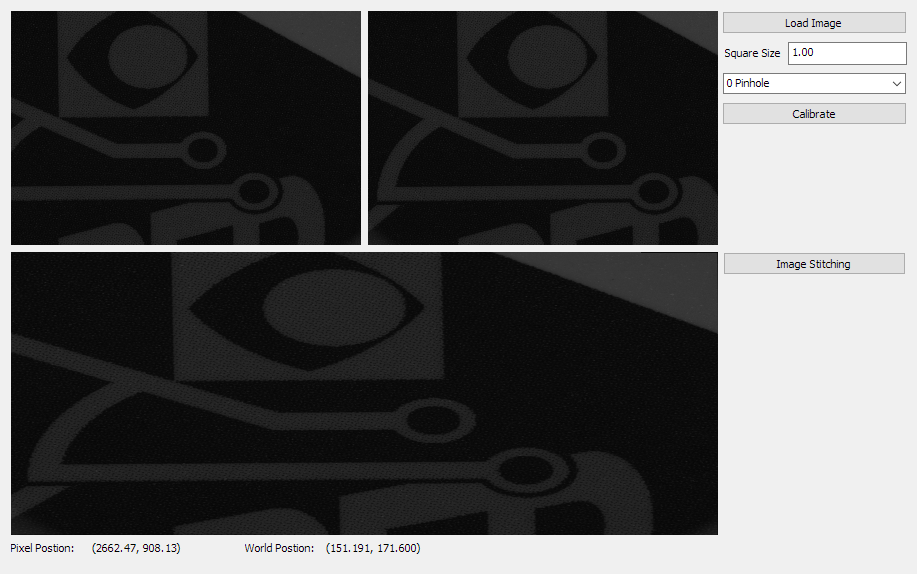
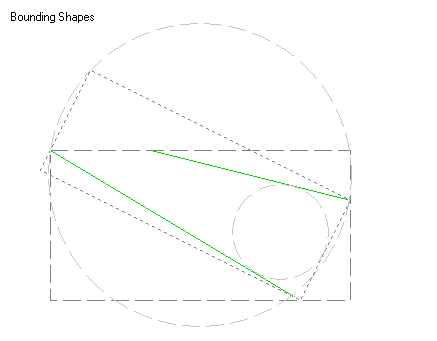

There are two kinds of DEMOs in the LPW package:
- MFC/C#/QT programs with GUI, providing user friendly graphics interface for interactive region manipulation, parameters' tuning and results' displacement. The executable binaries are located under the demo/require_platform folder, like demo/x64. The source codes as well as the project files are available in the individual project folder.
- Simple C++/C# code snippets, demonstrating how some LPW functions are called. It's usually a main function body in one single source file under demo/snippet folder. For detailed usage, please refer to How to Use DEMO Code Snippets.
NOTE 1: The platform of DEMOs should be exactly the same as the LPW dlls you installed and registered.
NOTE 2: Please make sure the LPW dlls are registered and licensed before running the DEMOs.
NOTE 3: The out-of-box Qt DEMO executors are built with Qt5.9.4, you may install the same version from Qt's official website. Or, you may use our abridged package of only the necessary dependencies, just download(x86 or x64) then extract to the DEMO folder.
GUI DEMO
| Description |
| Sanity | Demonstrate a typical vision task involves Image, Region, Pattern matching, calibration modules. |
| Region Manipulation | Demonstrate how to edit regions and how to calculate and create new regions. |
| Integrate with Camera | Demonstrate how to capture image into a LImage object with camera APIs, take Hik camera as an example. |
| Template Matching | Demonstrate template matching with sub-pixel precision. |
| Blob Analysis | Demonstrate blob analysis, either in grayscale or color mode. |
| Image Processing | Demonstrate the common image processing operations. |
| Line Detection | Demonstrate line detection with sub-pixel precision. |
| Circle Detection | Demonstrate circle detection with sub-pixel precision. |
| Path Detection | Demonstrate path detection. |
| Contour Detection | Demonstrate contour detection with sub-pixel precision. |
| Cross Mark Detection | Demonstrate cross mark detection with sub-pixel precision. |
| Gauging | Demonstrate the inspection using gauge tools for various shapes. |
| Calibration | Demonstrate the camera calibration, including n-points, pin-hole, FFD camera models using different types of calibration boards. |
| Camera Array and Image Stitching | Demonstrate the camera array calibration and image stitching. |
| Geometry | Demonstrate geometry module, including intersection calculation, gauging, fitting, etc. |
| Barcode | Demonstrate 1D/2D barcode detection and quality verification. |
| Display Control | Demonstrate the display control. |
| Connect to IntelliBlink Service | Demonstrate how to integrate with and make use of powerful IntelliBlink tasks. |
Code Snippets
| Source code | Description |
| HDR | HDR.cpp/cs | Demonstrate the HDR algorithm. |
| Image Blend | ImageBlend.cpp/cs | Demonstrate the image blending algorithm which is useful for denoising. |
| Min-max Distance | MinMaxDistance.cpp/cs | Demonstrate how to measure the distance between polygons. |
| Projection and Analysis | ProjectionAndAnalysis.cpp/cs | Demonstrate the image projection, and data analysis on the projection result, such as filtering, local extrema detection, etc. |
| Sort | Sort.cpp/cs | Demonstrate the sorting algorithms, especially the array sorter. |
| Color Space Conversion | ColorSpace.cpp/cs | Demonstrate the conversion of the color images between common color spaces. |
| Template Matching with Customized Shape | LearnWithShape.cpp/cs | Demonstrate how to train the template using customized shape generated via region objects. |
| Rotation Calibration and Alignment | CalibRotationCenter.cpp/cs | Demonstrate the rotation center calibration and mark alignment. |
| Background Subtract | BackgroudSubtract.cpp/cs | Demonstrate the detection of moving or pop-up objects in the static scene. |
| Data Blob Analysis | DataBlob.cpp/cs | Demonstrate the defect inspection on the cutting kerf, using data blob analysis. |
| Free Transformation of Image and Shapes | FreeTransform.cpp/cs | Demonstrate the generation of transform using point pairs and the transformation of the image and shape objects. |
| Classification using Machine Learning | MLClassification.cpp/cs | Demonstrate the image classification application using machine learning based approach. |
| Hand-written OCR | OCRHandWritten.cpp/cs | Demonstrate the OCR tool, to recognize hand-written characters as an example. |
| Polygon Operations | PolygonClipper.cpp/cs | Demonstrate the clipping operations to a polygon, such as expand, shrink, or boolean operations like intersection or union. |
| Pin Count | PinCount.cpp/cs | Demonstrate how to detect and count the pins, using the double-side edge gauge tool. |
| Flat Field Calibration using a White Board | FlatFieldWhiteBoard.cpp/cs | Demonstrate the flat field calibration process using a white board, to remove shading and lens cast. |
| Flat Field Calibration using a Solar Cell | FlatFieldSolar.cpp/cs | Demonstrate the flat field calibration process using the actual inspection object |
The followings are the introduction to the GUI DEMOs.
Sanity
Demonstrate a typical vision task involves Image, Region, Pattern matching, calibration modules.
Source code (C++): mfcdemo/MFCSanity
Source code (Qt): qtdemo/QtSanity
Source code (C#): csharpdemo/CSharpSanity
Image files: sourceImg.png, templateImg.png
Related classes: LImage, LRectRegion, LMatch, LMatchResults, LCalibNPoints

- Click Load Image button, load the image from file.
- Click Template Learn button, learn template from current image and region.
- Click Template Match button, do pattern matching in current region. The detect result's pixel position shows on the right.
- Click Calibrate button, do calibration with 9 points. Now the detect result's world position is displayed on the right.
- Click Reset Calibration button, reset calibration. Now the detect result's pixel position is displayed on the right.
- Click Save Calibration button, save current calibration object to file.
- Click Load Calibration button, load a new calibration object from file.
- Click Copy & Save button, save the current image to jpg file. You can find the saved image under same folder as the DEMO exe.
- Drag the handles of the region, move or resize the region.
- Click Reset Roi button, reset region's placement according to current image size.
Region Manipulation
Demonstrate how to edit regions and how to calculate and create new regions.
Source code (C++): mfcdemo/MFCRegion
Source code (Qt): qtdemo/QtRegion
Source code (C#): csharpdemo/CSharpRegion
Image files: mask.bmp
Related classes: LRectRegion, LRotRectRegion, LPolyRegion, LMaskRegion, LCircleRegion, LAnnulusRegion
- Click Load Image button, load image from file.
- Click Load Mask button, load mask image to the mask region.
- Select the proper R1 and R2 region, for the further manipulation.
- Click the manipulation buttons, and check the result region on the canvas.
- The demo application does Union, Subtract, Intersect, or Exclusive OR of the select R1 and R2 region.
- The demo application does Translation, Rotate, Scale or Invert the R1 region, using the input dx, dy, da and ds value.
- Click Reduce Image, the R1 region's reduced image and mask is shown on the canvas.
- Click To Mask, the R1 region's mask is show on the canvas.
- Move the cursor on the canvas will show the pixel under the cursor and its relative position in R1 region.
- Click Back to Edit to return the original state.
Integrate with Camera
Demonstrate how to capture image into a LImage object with camera APIs, take Hik camera as an example.
Source code (C#): csharpdemo/CSharpHikCam
Related classes: LImage
- Install driver of Hik camera.
- Open MVS to fetch the serial number of your camera, fill it into the text edit on the right.
- Click Start button, open the camera.
- Click Run (Continues Trigger), switch to continues trigger mode. It will update then display images captured by camera continuously.
- Click Snap (Soft Trigger), switch to soft-trigger mode. It snap one frame then display on UI.
Template Matching
Demonstrate template matching with sub-pixel precision.
Source code (C++): mfcdemo/MFCPat
Source code (Qt): qtdemo/QtPat
Source code (C#): csharpdemo/CSharpPat
Image files: sourceImg.png
Related classes: LRectRegion, LMatch, LMatchResults

- Click Load Image button, load image from file.
- Click Learn button, learn template from current image and region.
- Modify the Angle and Scale parameter as required.
- Modify Grayscale Match Weight to adjust the weight of gray value similarity in the evaluation score.
- Click Match in ROI button, do pattern matching in current region.
- The result shows in the table below, including the center positions, angles, scales and scores.
- Select one to highlight it on the canvas.
Blob Analysis
Demonstrate blob analysis, either in grayscale or color mode.
Source code (C++): mfcdemo/MFCBlob
Source code (Qt): qtdemo/QtBlob
Source code (C#): csharpdemo/CSharpBlob
Image files: rou.jpg, smile.png, cat.png
Related classes: LBlobAnalysis, LBlobFilter, LBlobResults, LBlob

- Click Load Image button, load image from file.
- The Mode changes to Grayscale or Color, according to the image format.
- Select Threshold to use the proper threshold mode:
- 0 Custom: use the input lower and upper threshold range.
- 1 Global Adaptive: use the auto-generated adaptive threshold based on the entire image and specified Polarity, then revised by Bias.
- 2 Local Adaptive: use the auto-generated adaptive threshold based on the local window and specified Polarity, then revised by Bias.
- Modify Soft Threshold to non-zero value to enable soft thresholding.
- Click Preview to check the thresholding result.
- Or, you can click Select Blob Range - Click on Canvas button, then click on the canvas where blob object is. It will generate a custom threshold range based on the selected pixels.
- Change Max Count for multiple instances detection.
- Select Sort by to use the proper method to sort all blob candidates, the top ones are reported as final results.
- Click Detect to run the blob analysis.
- The table shows all valid results, including their center positions, area, perimeter, circularity and aspect ratio.
- Select one to highlight it on the canvas.
- Check and modify the ranges to filter the required properties.
- Click Set Limitation (Based on Current Blob) to generate filters' lower and upper bound based on current selected blob object.
- Click Re-filter to apply filters on the blob results.
Image Processing
Demonstrate the common image processing operations.
Source code (C++): mfcdemo/MFCImgProc
Source code (Qt): qtdemo/QtImgProc
Source code (C#): csharpdemo/CSharpImgProc
Related classes: LImageThreshold, LImageArithm, LImageFilter, LEdgeFilter, LImageMorph, LImageStats, LHistogram
- Click Load Image button, load image from file.
- The demo application builds histogram of the image and display it on the right canvas.
- The demo application calculates the image and the histogram's statistic metrics in the pop-up windows.
- Click the image processing buttons below to do specified processing on the image.
- The result image shows on the left canvas.
- Click Show Original to display the original image.
Line Detection
Demonstrate line detection with sub-pixel precision.
Source code (C++): mfcdemo/MFCLine
Source code (Qt): qtdemo/QtLine
Source code (C#): csharpdemo/CSharpLine
Image files: nline_many.png
Related classes: LRotRectRegion, LLineDetector, LLineResults
- Click Load Image button, load image from file.
- Drag the handles of the region, move, rotate or resize the rotated rectangle region.
- Select Polarity to use the proper polarity of the line edge:
- 0 Dark to Light: The edge is from black(dark) pixels to white(light).
- 1 Light to Dark: The edge is from white(light) pixels to black(dark).
- 2 Either: Either polarity is acceptable.
- Select Find to use the proper find-by strategy for the line selection:
- 0 Best: The lines with best scores.
- 1 First: The first lines.
- 2 Last: The last lines.
- Modify Accept Score to filter false results with bad scores
- Change Max Count for multiple instances detection.
- Click Detect to do line detection.
- The table shows all valid results, including their middle points' positions and angles.
- Select one to highlight it on the canvas.
- The chart shows the score distribution along the region's direction. It's useful for determining a proper accept score.
Circle Detection
Demonstrate circle detection with sub-pixel precision.
Source code (C++): mfcdemo/MFCCircle
Source code (Qt): qtdemo/QtCircle
Source code (C#): csharpdemo/CSharpCircle
Image files: half_arc_1.png
Related classes: LAnnulusRegion, LCircleDetector, LCircleResults

- Click Load Image button, load image from file.
- Drag the handles of the region, move or resize the annulus region, put its center near the center of the circle.
- Select Polarity to use the proper polarity of the circle edge:
- 0 Dark to Light: The edge is from black(dark) pixels to white(light).
- 1 Light to Dark: The edge is from white(light) pixels to black(dark).
- 2 Either: Either polarity is acceptable.
- Select Find to use the proper find-by strategy for the circle selection:
- 0 Best: The circles with best scores.
- 1 Smallest: The smallest circles.
- 2 Largest: The largest circles.
- Modify Accept Score to filter false results with bad scores
- Change Max Count for multiple instances detection.
- Click Detect to do circle detection.
- The table shows all valid results, including their center positions and radius.
- Select one to highlight it on the canvas.
- The chart shows the score distribution along the region's direction. It's useful for determining a proper accept score.
Path Detection
Demonstrate path detection.
Source code (C++): mfcdemo/MFCPath
Source code (Qt): qtdemo/QtPath
Source code (C#): csharpdemo/CSharpPath
Image files: nline_many.png, leadcut.png
Related classes: LRotRectRegion, LPathDetector, LPathResults

- Click Load Image button, load image from file.
- Drag the handles of the region, move, rotate or resize the rotated rectangle region.
- Select the proper Polarity. to find the correct type of path:
- 0 Black on White: Black(dark) path on the white(light) background.
- 1 White on Black: White(light) path on the black(dark) background.
- Change the score thresholds to a proper value:
- Score: The absolute accept score.
- Relative Score: The relative accept score, computed using the current and the next result candidate or background pixels.
- Change Path Width to merge/separate nearby paths in multiple instances detection.
- Change Straightness , it's used to controls the trend of the path.
- Change Max Count for multiple instances detection.
- Click Detect to do path detection.
- The table shows all valid results, including their start position and scores.
- Select one to highlight it on the canvas.
Contour Detection
Demonstrate contour detection with sub-pixel precision.
Source code (C++): mfcdemo/MFCContour
Source code (Qt): qtdemo/QtContour
Source code (C#): csharpdemo/CSharpContour
Image files: rectwithhole.png
Related classes: LRotRectRegion, LContourDetector, LContourResults
- Click Load Image button, load image from file.
- Drag the handles of the region, move, rotate or resize the rotated rectangle region.
- Change the Connect Tolerance and Kernel Size to the proper value.
- Change the rejection and filtering thresholds
- Reject Short and Reject Weak: The absolute thresholds used to reject very Short-OR-Weak contours.
- Filter Short and Filter Weak: The relative threshold used to filter the Short-And-Weak contours, compared with the longest/strongest contour in the candidates.
- Click Detect to do contour detection.
- The table shows all valid results, including their average magnitude, length and scores.
- Select one to highlight it on the canvas.
- Select the proper Polarity then click Detect With Direction to do detection with direction filtering:
- 0 Dark to Light: The edge is from black(dark) pixels to white(light).
- 1 Light to Dark: The edge is from white(light) pixels to black(dark).
- 2 Either: Either polarity is acceptable.
Cross Mark Detection
Demonstrate cross mark detection with sub-pixel precision.
Source code (C++): mfcdemo/MFCCrossMark
Source code (C#): csharpdemo/CSharpCrossMark
Image files: cross_white.png, cross_edge.png, cross_12.png
Related classes: LRectRegion, LCrossMarkDetector, LCrossMarkResults
- Click Load Image button, load image from file.
- Drag the handles of the region, move or resize the rectangle region.
- Check Use Auto-Threshold to enable using auto-thresholding, or set the proper Mark Range for custom-thresholding, to locate the cross mark candidate positions.
- Choose the proper Polarity to precisely locate the two cross lines:
- 0 Dark to Light : by the line edges from black(dark) pixels to white(light).
- 1 Light to Dark ：by the line edges from white(light) pixels to black(dark).
- 2 Dark on Light ：by the black(dark) pixels on the line out of white(light) background.
- 3 Light on Dark ：by the white(light) pixels on the line out of black(dark) background.
- Set the proper Size Range and Width , it helps filter the false detections
- Click Detect or Detect in ROI button to do detection. The table shows all valid results and their center positions.
- Select one to highlight it on the canvas.
Gauging
Demonstrate the inspection using gauge tools for various shapes.
Source code (C++): mfcdemo/MFCGauge
Source code (C#): csharpdemo/CSharpGauge
Image files: cutkerf.png, leadcut.png
Related classes: LLineGauge LCircleGauge LArcGauge

- Click Load Image button, load image from file.
- Click Reset ROI button, reset region's placement according to current image size.
- Select the required gauge type, for example, line gauge.
- Select Polarity to use the proper polarity of the line edge:
- 0 Dark to Light: The edge is from black(dark) pixels to white(light).
- 1 Light to Dark: The edge is from white(light) pixels to black(dark).
- 2 Either Edge: Either edge polarity is acceptable.
- 3 Black on White: This is a black(dark) object on white(light) background.
- 4 White on Black: This is a white(light) object on black(dark) background.
- 5 Either Object: Either object polarity is acceptable.
- Change the size and interval of the sample regions.
- Click Detect button to do gauge inspection.
- The result is shown in the result panel as text, for lines, it shows the position of its middle point and the angle.
- The chart shows the score distribution along the region's direction. It's useful for determining a proper accept score.
Calibration
Demonstrate the camera calibration, including n-points, pin-hole, FFD camera models using different types of calibration boards.
Source code (C++): mfcdemo/MFCCalib
Source code (Qt): qtdemo/QtCalib
Source code (C#): csharpdemo/CSharpCalib
Image files: chessboard.png, circlegrid.png, distcharuco.jpg
Related classes: LCalibNPoints, LCalibPinHole, LCalibFFD, LCalibCustom, LCalibBoard, LCalibPointPairs

- Choose the proper calibration board type and click:
- Chessboard: open the chessboard image, change the Grid Size and Square Size
- Circle Grid: open the circle grid image, change the Grid Size and Square Size
- Distributed Charuco: open the dist-charuco image, change the Square Size
- Check Auto Remove Bad to let the board detection method remove bad corners.
- Click Detect to detect the calibration board, generate the image and world point pairs.
- Choose the proper calibration model:
- NPoints: choose the proper transformation type.
- PinHole: you may add multi-view points, click the button to add the current image pairs as multi-view points
- FFD: modify the grid size, bigger size output more precise optimization, but slower.
- Custom: define custom calibration.
- Click Calibrate to do calibration
- Click Save to save the calibration to file.
- Click Load to load the calibration from file.
- Click Reset to reset the calibration.
- Choose the proper fix mode then click Fix Image, the fixed image shows on the canvas.
- Move the cursor on the canvas will show the pixel under the cursor and its corresponding world position.
Camera Array and Image Stitching
Demonstrate the camera array calibration and image stitching.
Source code (C++): mfcdemo/MFCCamArray
Source code (Qt): qtdemo/QtCamArray
Source code (C#): csharpdemo/CSharpCamArray
Image folders: camera_array
Related classes: LCameraArray, LCalibBoard

- Click Load Image, navigate and select the camera_array folder.
- Modify Square Size and choose the proper calibration model.
- Click Calibrate to do calibration of the loaded camera array.
- Click Image Stitching to load the poker images then do stitching.
- The upper two canvases show the original two images of the camera array, the lower canvas shows the stitching result image.
- Move the cursor on the upper two or the lower canvas will show the pixel under the cursor in that image and its corresponding world position.
Geometry
Demonstrate geometry module, including intersection calculation, gauging, fitting, etc.
Source code (C++): mfcdemo/MFCGeom
Source code (Qt): qtdemo/QtGeom
Source code (C#): csharpdemo/CSharpGeom
Related classes: LPoint, LLine, LCircle, LPoints, LRect, LPolygon
 
Barcode
Demonstrate 1D/2D barcode detection and quality verification.
Source code (C++): mfcdemo/MFCBarcode
Source code (Qt): qtdemo/QtBarcode
Source code (C#): csharpdemo/CSharpBarcode
Image files: barcode_code39.png, barcode_code128.png, barcode_datamatrix.png, barcode_ean13.png, barcode_i25.png, barcode_qr.png
Related classes: LBarcodeDetector, LBarcodeResults, LBarcodeResult

- Click Load Image button, load image from file.
- Check the required 1D barcode types or All 1D Barcode for 1D barcode detection.
- Check the required 2D barcode types or All 2D Barcode for 2D barcode detection.
- Check Quality Verify for barcode quality verification.
- Change Max Count for multiple instances detection.
- Click Detect to do the detection and verification.
- The table shows all valid results, including their center positions, angles, quality gradings and data.
- Select one to highlight it on the canvas.
Display Control
Demonstrate the display control.
Source code (C++): mfcdemo/MFCDisplay
Source code (Qt): qtdemo/QtDisplay
Source code (C#): csharpdemo/CSharpDisplay
Related classes: LDisplay

- Click Load Image button, load image from file.
- Select region type, and click Add to add some random regions to the display control.
- Click Reset to remove all regions.
- Select shape type, and click Add to add some random shapes to the display control.
- Click Reset to remove all shapes.
- Click Open Display Dialog to open a new display control in a pop-up dialog.
- Drag the image to move it, use wheel to zoom in or out.
- Click Fit Window to fit the image size to the current window size.
- Click Fit a Random Object to move the viewport to a random region or shape, then zoom in or out to fit the current window size.
- Click Reset All to remove all regions and shapes.
- RMC the display control, pop-up the context menu.
- Click Save to save the current image to file.
- Click Save Window to save the screen-shot of the current window to file.
Connect to IntelliBlink Service
Demonstrate how to integrate with and make use of powerful IntelliBlink tasks.
Source code (C++): mfcdemo/MFCIBService
Source code (Qt): qtdemo/QtIBService
Source code (C#): csharpdemo/CSharpIBService
Image folders: exame_chip_1, exame_chip_2
Related classes: LIBService, LIBAlgoResult, LIBData, LIBAlgoConfig, LMatch

- Click Select IB Service, navigate and select the folder where IntelliBlink is installed.
- Wait for the demo application to connect to the IntelliBlink engine, it will pop up a successful message box when it's done.
- Click Load IB Task, select the folder of example task and images.
- The demo application does template matching to find all object on the source image and shows the result list.
- Select one matching result in the list.
- The demo application generates region from the matching result, then execute IntelliBlink task on the reduced image.
- The execution time and results of the task are shown on the canvas or on the right panel.
- Click Refresh to reload the task's parameters from the IntelliBlink engine.
- Modify the parameters in the input editor.
- Drag the handles of the region, move or resize the region in the task.
- Click Apply to apply the modified parameters to the IntelliBlink engine.
{kind=link}
{kind=link}
{kind=link}
{kind=link}
{kind=link}
{kind=link}
{kind=link}
{kind=link}
{kind=link}